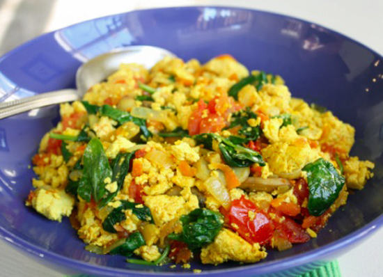
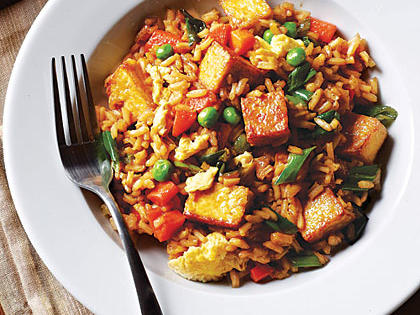
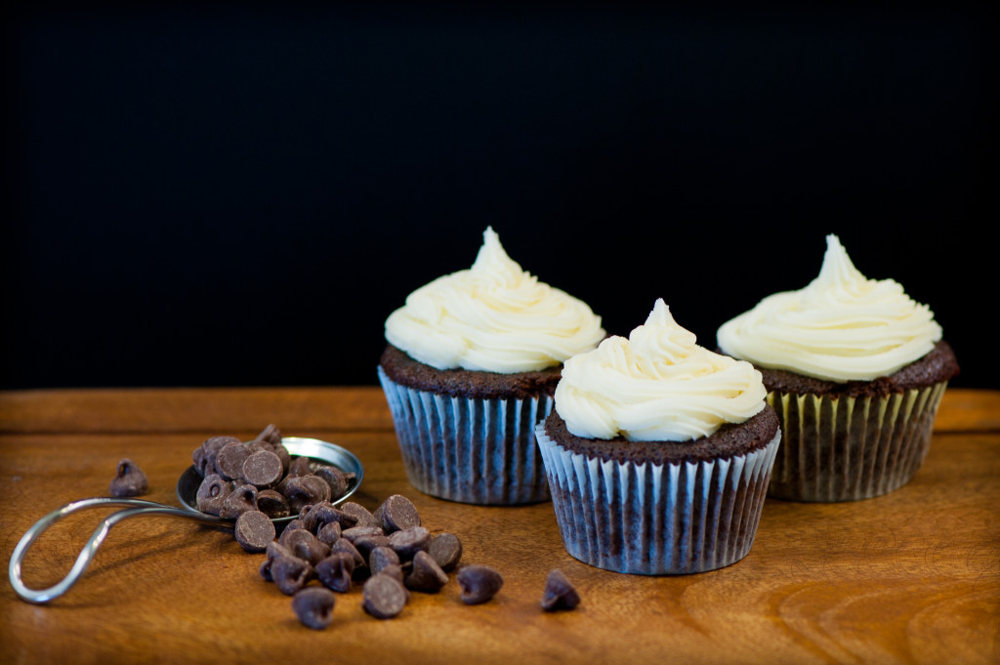
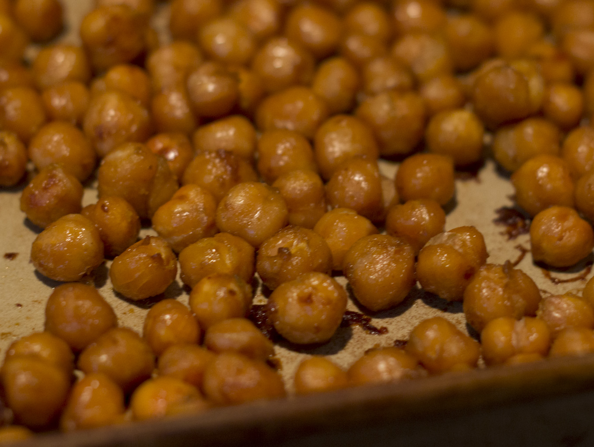

Scrambled Tofu 
Ingredients
- Extra Firm Tofu
- Nutritional Yeast
- Salt, Pepper, Garlic
- Extra Virgin Olive Oil
- Pico Salsa
Drain tofu and crumble into pieces. Place it in a skillet on stove and heat on medium. While heating add in a 1/4 a cup of nutritional yeast. Add the amount of pico salsa you desire. Cook for about 8 minutes. Add in pepper, garlic, and salt to taste. Serve immediately.
TVP Tuna Salad

Ingredients
- 2 cups TVP protein
- 3 heeping spoonfuls of veganaise
- Salt, Pepper, Garlic
- 3 stalks of celery
- 2 large carrots
- 4Tbs soy sauce
Boil 8 cups of water. Chop or use a food processor to chop up celery and carrots. Stir in TVP to boiling water. Add in vegainaise, soy sauce, celery, and carrots to TVP. Add in pepper, garlic, and salt to taste. slap it on some bread and munch! Great cold or hot.
Tofu Fried Rice 
Ingredients
- 1 Package Extra Firm Tofu
- 1 Boil in Bag Brown Rice
- Salt, Pepper, Garlic
- 1 Bag Frozen Mixed Veggies
- Extra Virgin Olive Oil
- 5Tbs Hoisin Sauce
Drain tofu and let sit in papertowel for 10minutes to soak up moisture. One drained, slice into 1/4 squares. Sautee in skillet with oilve oil. Season with salt and peper. While cooking tofu, boil water and cook brown rice. Let Tofu cook for about 8 minutes, then add in mixed veggies. Cook for another 3 minutes. Pour hoisin sauce in the mix. Place on top of the brown rice and dig in! Add teriyaki, soy, or more hoisin sauce to taste.
Chocolate Cupcakes 
Ingredients
- 1 box chocoalte cake (vegan friendly)
- 1 tube cream cheese vegan icing
Follow instructions for making cake mix. Use cupcake baking pan and line with paper cups. place mix in each cup about 1/4 of the way. Bake at 350 for 20 minutes. Let cool for 10 minutes. Add icing to the top. Enjoy!
Roasted Chickpeas 
Ingredients
- 2 cans of cooked chickpeas
- Salt, Pepper, Garlic, Thyme
- Extra Virgin Olive Oil
Preheat oven to 400. Drain cans of chickpeas. Spread out on baking sheet. Evenly coat chickpeas with olive oil. Season to your desire. Bake for 30 minutes. Let cool. Taste the goodness! Can add to wraps, sandwiches, and salads